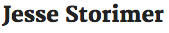

Sponsors
-

The largest Ruby on Rails development agency in London and Cape Town.
Venue and monetary support
-

At Hetzner South Africa we are passionate about web hosting - it’s our core business and it’s what we do best.
Monetary support
-

At Siyelo, we help build new companies, and improve the technology of existing ones.
Monetary support
-
Amazon Web Services offers a complete set of infrastructure and application services that enable you to run virtually everything in the cloud.
Monetary support
-

I write short, focused technical books about system programming specifically for Ruby and Rails developers. If you're a great Rails developer, but don't understand how your app runs under the hood, these books are for you.
Free ebooks to attendees
-

Brief books for people who make websites.
Free e-books for 3 attendees, and ebook discounts for all attendees
-
Five Simple Steps is a small, independent publisher of practical design books for web professionals.
Free e-book (A Practical Guide to Web App Success) for 2 attendees, and ebook discount for all attendees.
-
The Pragmatic Programmers is a company with a simple goal: to improve the lives of developers.
Book discounts